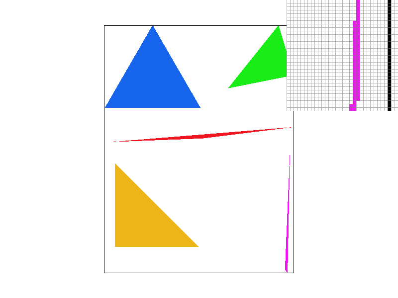
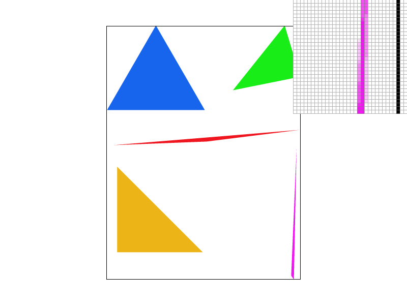
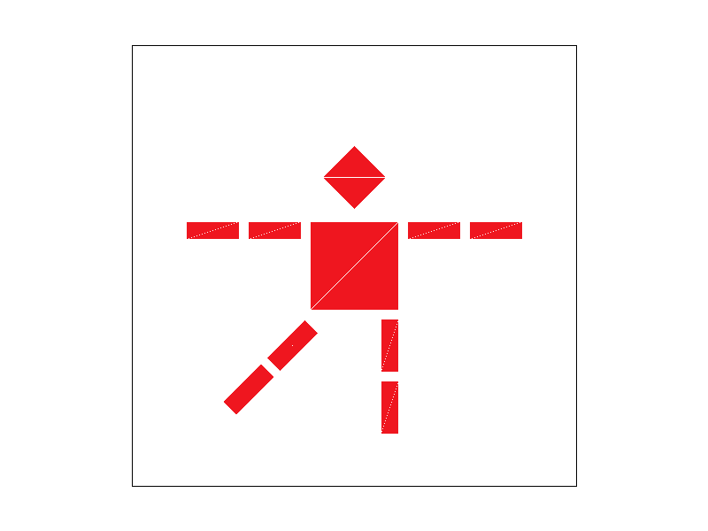
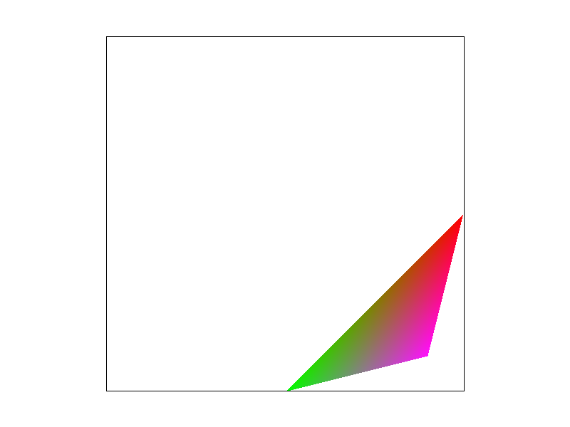
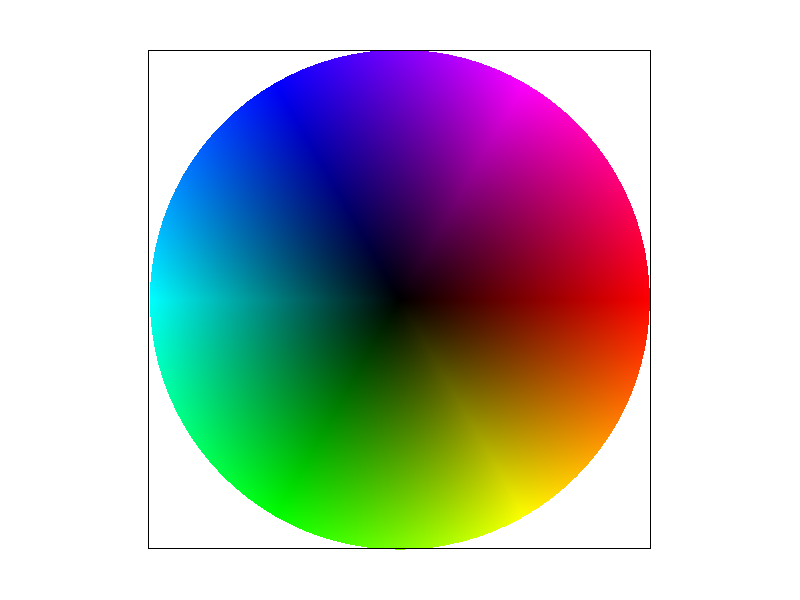

1. I rasterized my triangles by sampling points in the center of pixels and checking if the sample point was inside of a triangle.
If it was, then I colored that pixel in the frame_buffer. My algorithm is no worse than one that checks samples within the bounding
box of a triangle because my algorithm does exactly that, I did not implement sample checking for scanning only the points within
the edges of a triangle.
2. My supersampling algorithm scales the horizontal and vertical frequency of sampling and outputs to a sample buffer that is also scaled the appropriate amount. Vertices of triangles, points, and lines are also scaled accordingly. For example a point at (1,2) would be mapped to (4, 8) with 4x4 supersampling. This way I did not have to make many changes to my rasterization pipeline and could reuse code from part 1 to conduct the sampling. After populating the sample buffer, each NxN group of pixels, where NxN is the supersampling frequency, is averaged out and colored in the frame buffer. Supersampling is useful because it reduces the ammount of jaggies where a good portion of an object is within the viewing pixel, but does not pass through the sampling point. Essentially, supersampling is a heuristic for coloring pixels by area without doing all the computation required to accurately calcuate area.
 3. Cubeman takes his first step.
4. Barycentric coordinates are coordinates used to describe points within a triangle where each coordinate is the relative distance between a vertex and the opposing edge. These coordinates are useful for interpolating colors, textures, and areas. For example, a triangle with a different color for each vertex can be rendered as a gradient.
 5. Pixel sampling is where pixels on an objects/shape are mapped to pixels in a texture map. Nearest pixel sampling is where the pixel sampled is the closests pixel in the texture to the uv coordinate. Bilinear sampling is where the 4 pixels in the texture map around the uv coordinate are sampled and averaged out using linear interpolation. I implemented nearest pixel sampling by rounding the uv coordinates and sampling the mipmap at the rounded coordinate. I implemented bilinear sampling by sampling the 4 nearest pixels using floor and ceil. I then took the sum of each of the 4 colors scaled by their distance to the sample point as the output color.
6. Level sampling is where you conduct point sampling on different levels of texture mipmaps where each level of a mipmap is progressively lower resolution. This is useful because we can change the resolution of textures as objects get larger or smaller, saving computational resources. I calculated the true mipmap level by taking the log of the max of the derivates of the horizontal and vertical scaling. For zero level sampling, the mipmap texture of highest resolution is always used. For nearest level sampling, the nearest integer of the true level was used. And for bilinear, the weighted sum of the level above and below the true level was used. Zero level is the fastest as it does not need to compute any mipmap levels, uses the most memory as each texture is full resolution, and is the most aliased. Nearest is slower than zero level sampling, uses less memory, but is more antialiased. Linear level sampling is the slowest, uses more memory than linear level sampling as 2 levels are used to interpolate, but produces the best antialiasing.